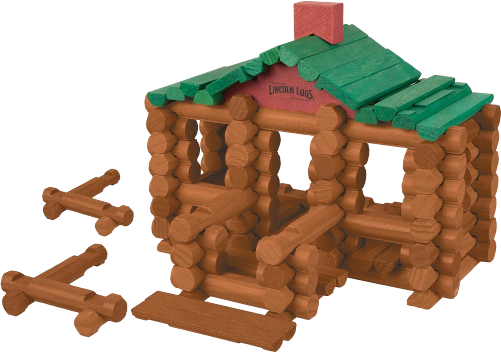

1900-1945 - L'ERA DEI GRANDI MITI
LINCOLN LOGS
Mentre in Europa il Meccano celebrava l'acciaio e le macchine, negli Stati Uniti del 1916 nasceva un gioco che guardava alle radici della nazione: i Lincoln Logs. Queste piccole travi di legno incastrate non erano solo un passatempo, ma un omaggio alle leggendarie case di tronchi dei pionieri americani.
UNA FIRMA D'AUTORE
La storia dei Lincoln Logs è legata a uno dei più grandi geni dell'architettura: John Lloyd Wright, figlio del celebre Frank Lloyd Wright.
- L'ispirazione: L'idea non venne dalle foreste, ma da un cantiere moderno. John stava aiutando il padre nella costruzione dell'Imperial Hotel di Tokyo.
- La tecnica: Per rendere l'hotel antisismico, vennero usate travi di legno con incastri particolari. John intuì che quel sistema di "notching" (intaglio) poteva diventare un gioco perfetto per i bambini.



SEMPLICITÀ E TRADIZIONE
A differenza del Meccano, i Lincoln Logs non richiedevano viti o attrezzi. Il sistema era basato su:
- Tronchi in miniatura: : Realizzati inizialmente in vero legno di sequoia, con intagli alle estremità che permettevano di sovrapporli stabilmente.
- Tetti e finestre: Pezzi complementari di colore verde o rosso che completavano l'estetica della classica "Log Cabin".
- Il nome: Fu scelto in onore di Abraham Lincoln, il presidente nato proprio in una capanna di tronchi, simbolo di umiltà, forza e spirito americano.

IL PRIMO VERO "ECO-TOY"
In un'epoca che correva verso l'industrializzazione spinta, i Lincoln Logs rappresentavano un ritorno alla natura e alla manualità tattica. I bambini potevano costruire fortini, stazioni di posta e piccoli villaggi del West, alimentando il mito della frontiera che proprio in quegli anni spopolava nei primi film di Hollywood.